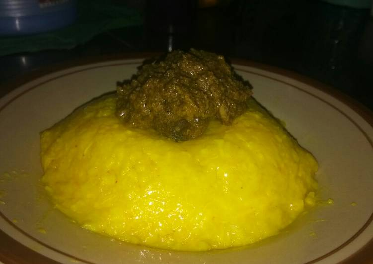

Pelleng is a traditional Pakpak food that is served at sacred tribal and kinship events. Pelleng is made from soft rice with a mixture of spices such as turmeric, galangal, onions, chilies and many more. At first glance it looks like yellow rice. Pelleng is usually equipped with dagimg as a side dish. The meat used is native chicken.Pelleng is usually served at celebrations or important events in the family or village such as when carrying out exams, looking for work, going overseas, celebrating, to war. For the Pakpak community, Pelleng is food that serves to inspire enthusiasm and courage.